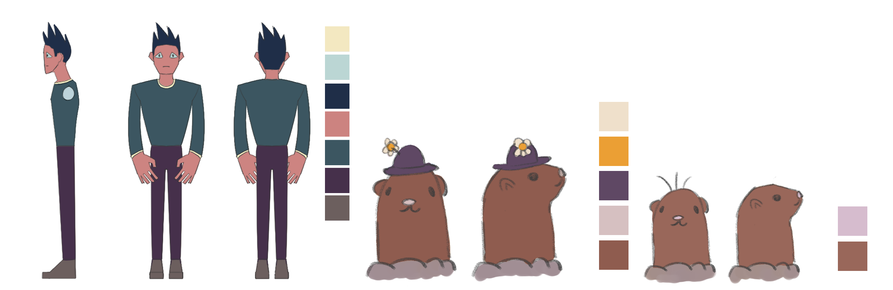
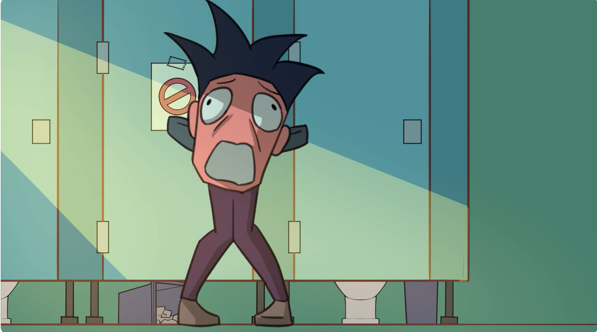
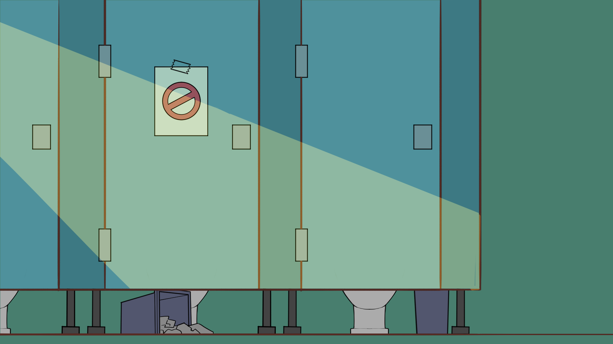

如廁衝天
一部以日常內急經驗為靈感，發展出的荒謬搞笑短篇動畫。
Project Info
類型｜短篇動畫
風格｜搞笑、誇張表現
長度｜60–90 秒
團隊｜三人專案
Concept
《如廁衝天》以「急著上廁所」這個生活中常見的小困境為出發點， 將日常經驗轉化為誇張、荒謬的喜劇情節。
作品以「馬桶飛天」作為核心視覺橋段，讓原本普通的公廁場景逐漸失控， 最終發展成一場天馬行空的飛行冒險。
Story
主角因肚子疼急需上廁所，卻發現唯一的廁所始終被佔用。 在焦躁與崩潰中，他拆開廁所門，卻發現裡面竟然是一隻土撥鼠。 土撥鼠鑽入馬桶消失後，主角坐上馬桶解決內急，卻意外被馬桶如火箭般送上天空。
Character Design

角色設計以誇張表情與肢體動作為核心，透過細瘦身形、蒼白臉色與爆發式姿態， 強化主角內急時的喜劇張力。土撥鼠角色則作為荒謬轉折的關鍵，讓故事從日常情境轉向失控喜劇。
Scene & Storyboard



Scene｜以公園公廁作為主要場景，讓日常空間成為荒謬事件的起點。
Storyboard｜透過快速節奏、誇張鏡頭與情緒堆疊，建立喜劇動畫的轉折效果。
Team
導演
陳佳佑
編劇
陳佳佑、羅際泓、周書妤(Yuki)
原畫
陳佳佑、羅際泓、周書妤(Yuki)
二原
羅際泓、周書妤(Yuki)
場景
陳佳佑、羅際泓
後製
羅際泓